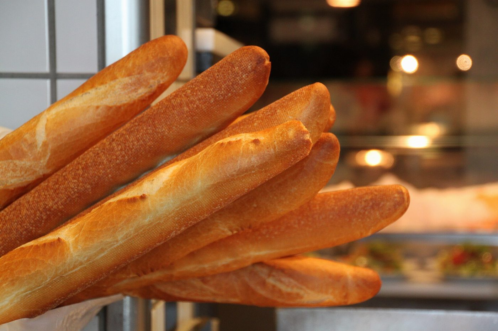

カフェ / 大阪府岸和田市
ルーラル
カフェ「ルーラル」のご案内ページです。営業時間やメニューなど、詳しいことは準備中。まずはInstagramをのぞいてみてください。
制作側の連想
梱包機の部位を、配置図にしてみる
このサイトは、荷物にバンドを掛ける自動梱包機を図にしてみました。六つの部位に番号をふり、上の図と並べています。制作側の連想で、お店の理念・由来とは無関係です。実際の機械の仕様を示すものでもありません。
凡例
六つの部位
- 1ガイドアーチ荷物が通る門型の枠で、バンドを荷物のまわりへ回す通り道。
- 2バンドリール巻いたバンドを送り出す、芯のついた巻き取り部。
- 3溶着ヘッド重ねたバンドの端を熱で留める部分。
- 4搬送ローラー荷物を台の上で送るために並んだ、回る軸。
- 5操作パネル締め具合などを設定するボタンと表示窓。
- 6テンションユニットバンドを引いて、荷物に締め付ける部分。
ギャラリー(イメージ)
パンとコーヒー豆の写真


写真はパンとコーヒー豆のイメージです。お店のものではなく、お店で提供している商品を示すものでもありません。
写真イメージ
焼き色の写真


写真はパンのイメージです。お店のものではありません。
ご案内
お店のこと(確認できたものだけ)
| 所在地 | 〒596-0845 大阪府岸和田市阿間河滝町1643 |
|---|---|
| 電話 | 準備中 |
| 営業時間 | 準備中 |
| 定休日 | 準備中 |
| ご予約 | 準備中 |
| 駐車場 | 準備中 |
| SNS | Instagram @ruraru_bake |